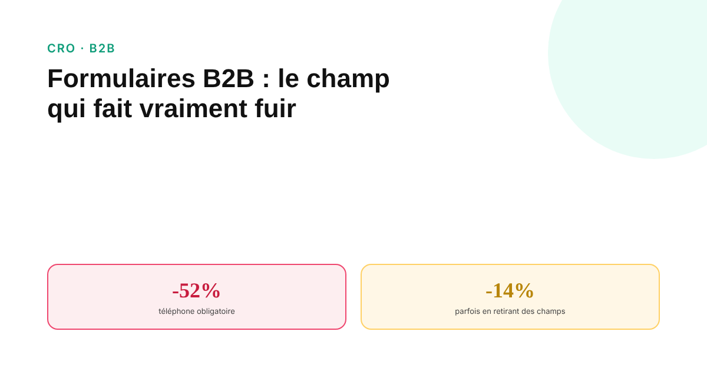
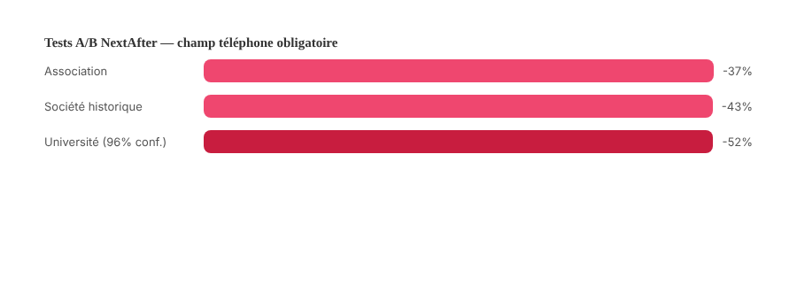

Formulaires B2B : le champ qui fait vraiment fuir un prospect (et celui qui ne change rien)
« Raccourcissez vos formulaires » est le conseil CRO le plus répété, et le moins souvent nuancé. Une étude contrôlée a même mesuré l'inverse. Voici ce que les tests réels montrent, champ par champ.

« Supprimez des champs, votre formulaire convertira mieux » revient dans la quasi-totalité des guides CRO. C'est une direction globalement correcte, mais présentée de façon bien plus mécanique que ce que les données réelles permettent d'affirmer : le nombre de champs seul n'est pas le facteur déterminant, et au moins un test contrôlé a mesuré l'effet inverse.
Le contre-exemple qui nuance tout : moins de champs, moins de conversion
Unbounce a testé la réduction d'un formulaire de 9 à 6 champs sur une page réelle. Résultat : une baisse de conversion de 14,23 %, pas une hausse. L'explication avancée : certains champs retirés contribuaient à la confiance perçue ou à la qualification implicite du visiteur, et leur suppression n'a pas simplifié l'expérience autant qu'elle a réduit un signal de sérieux. Ce résultat isolé suffit à invalider la règle « moins de champs = toujours mieux » comme loi universelle : c'est la pertinence des champs, pas seulement leur nombre, qui déterminent l'effet.
Le champ qui fait vraiment une différence mesurée : le téléphone
NextAfter a mené plusieurs tests A/B contrôlés, sur des organisations réelles nommées, en rendant le champ téléphone obligatoire ou facultatif sur un formulaire de contact : une baisse de conversion de 36,9 % pour une association, 42,6 % pour une société historique du Texas, et jusqu'à 52 % pour une extension universitaire du Wisconsin, ce dernier résultat validé à un niveau de confiance de 96 %. Rendre ce champ facultatif plutôt qu'obligatoire a fait passer un taux de conversion de 42,6 % à 80 % sur l'un des formulaires testés. C'est, de loin, la donnée la mieux établie de tout ce sujet : un champ téléphone obligatoire reste le frein le plus documenté sur un formulaire B2B.

Les chiffres qui circulent sans méthode retraçable
Des pourcentages précis comme « 3 champs convertissent à 25 %, 5 champs à 21 %, 6 champs et plus à 15 % » circulent largement, attribués à HubSpot. Leur méthodologie exacte n'est aujourd'hui plus retraçable sur une source primaire accessible : ils sont repris de façon quasi identique depuis des années, sans qu'on puisse vérifier l'échantillon ni la date réelle de la mesure. Ils donnent une direction plausible — un formulaire plus long pèse globalement sur la conversion — mais ne doivent pas être cités comme une statistique précise et actuelle.
Le compromis B2B : volume contre qualité, une hypothèse plausible mais faiblement démontrée
Plusieurs praticiens B2B avancent qu'un formulaire plus détaillé filtre une partie des contacts non qualifiés — étudiants, curieux, concurrents en veille — avant même le premier échange commercial, ce qui améliorerait la qualité des leads au prix d'un volume de soumissions plus faible. L'argument est cohérent avec la logique commerciale B2B, mais repose surtout sur des retours d'expérience et des études de cas isolées, sans étude contrôlée solide qui quantifie précisément ce compromis entre volume et taux de conversion en opportunité réelle.
Ce qu'il est raisonnable de faire, concrètement
Avant de retirer ou d'ajouter des champs sur la base d'une règle générale, tester le champ téléphone en premier : le rendre facultatif plutôt qu'obligatoire, ou le retirer du premier formulaire pour le demander plus tard dans le parcours commercial, reste l'intervention la mieux documentée. Pour le reste, un test A/B propre au compte reste plus fiable qu'un chiffre générique : le cas Unbounce montre qu'une réduction de champs peut aussi bien faire baisser la conversion que la faire monter, selon ce qui est retiré et pourquoi.
FAQ
Raccourcir un formulaire augmente-t-il toujours la conversion ?
Pas toujours. Un test contrôlé d'Unbounce a montré qu'un formulaire réduit de 9 à 6 champs a fait baisser la conversion de plus de 14 %, parce que des champs retirés contribuaient à la confiance ou à la qualification du prospect. Le nombre de champs n'est pas le seul facteur : leur nature et leur pertinence comptent autant.
Quel champ fait le plus baisser la conversion sur un formulaire B2B ?
Le numéro de téléphone obligatoire, de façon nette et documentée par plusieurs tests A/B contrôlés menés par NextAfter sur des organisations réelles : des baisses de conversion allant de 37 % à plus de 50 % ont été mesurées lorsque ce champ était rendu obligatoire plutôt que facultatif ou absent.
Un formulaire plus long peut-il améliorer la qualité des leads, même s'il convertit moins ?
C'est plausible et avancé par plusieurs praticiens B2B, qui estiment qu'un formulaire plus détaillé filtre une partie des contacts peu qualifiés avant même le premier échange commercial. Mais les preuves disponibles restent anecdotiques, sans étude contrôlée solide pour quantifier précisément ce compromis entre volume et qualité.
Envie de tester vos formulaires sur de vraies données, pas sur des règles générales ?
Pour aller plus loin, voir la page CRO, et l'article Page de prix : les erreurs qui font fuir un prospect B2B.
Pour continuer sur ce sujet.